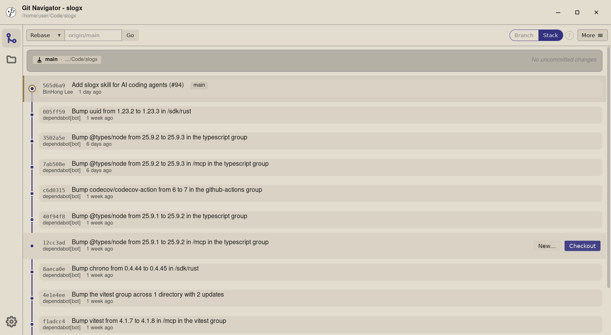
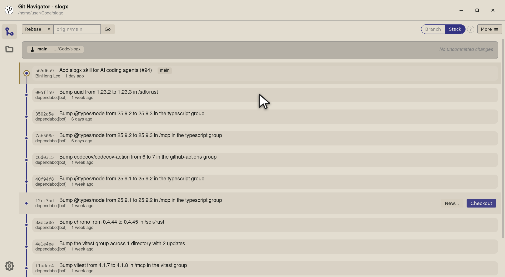
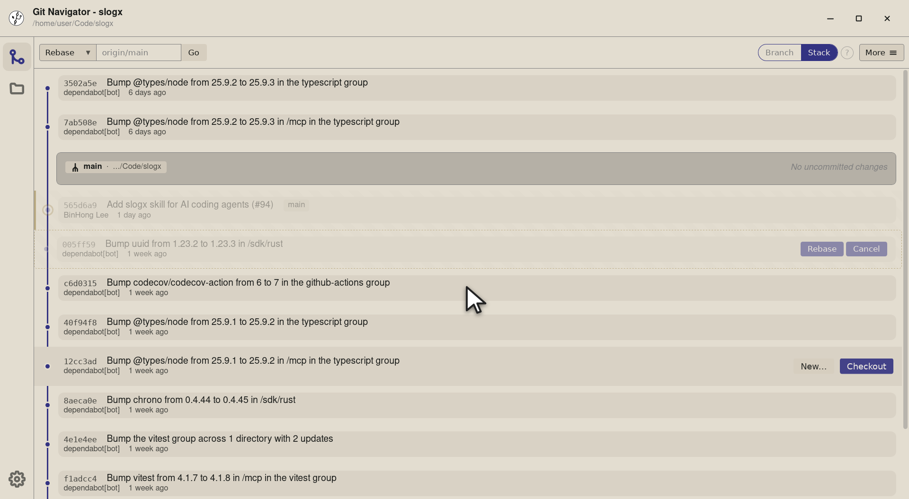
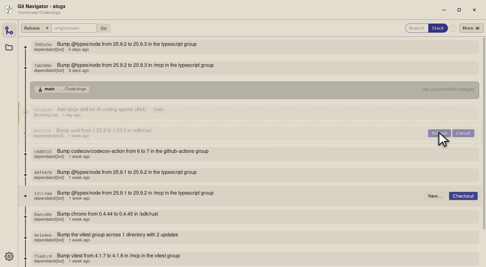
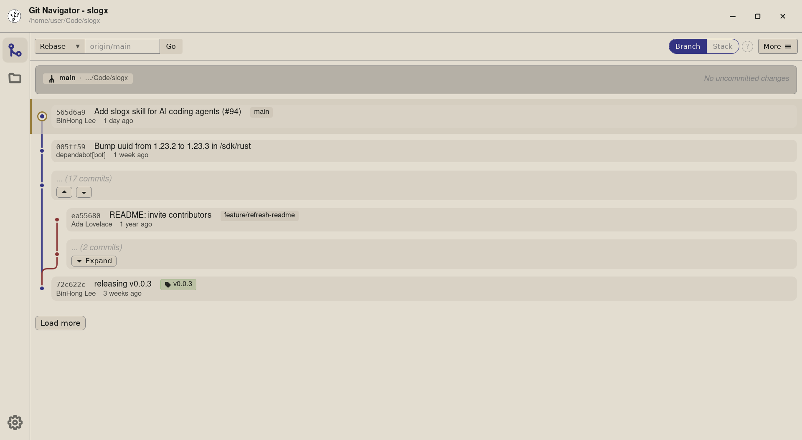
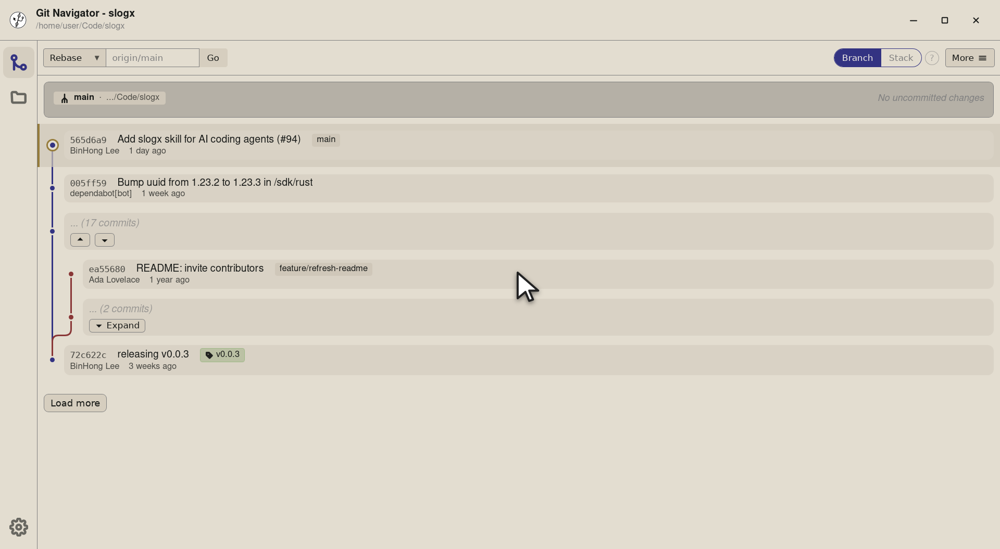
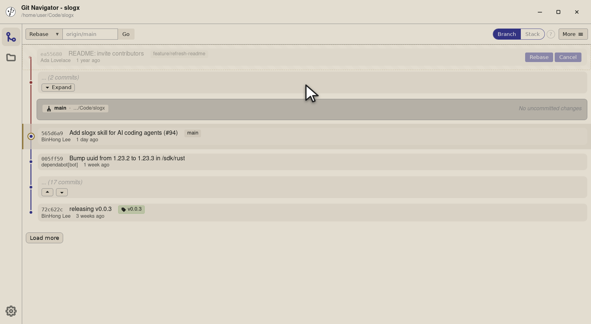
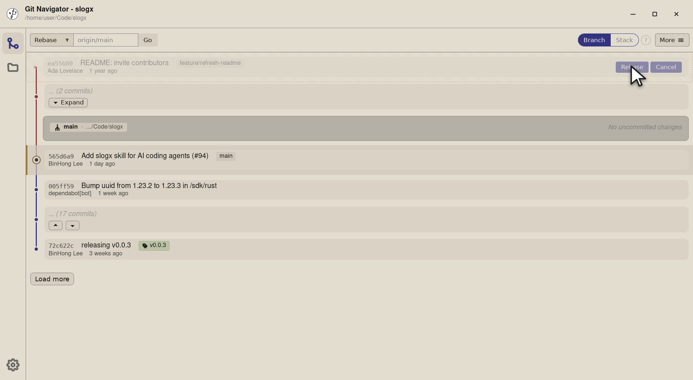

Rebase by dragging — see the result before you commit
Git Navigator turns git rebase --onto into a direct manipulation: grab the commit you want to move, drop it on its new parent, and the graph previews exactly where every descendant will land. Confirm to apply, or cancel and nothing changes.

How rebase feels in Git Navigator
Drag any commit onto any other
Pick the commit you want to move, drop it on its new parent. No git rebase --onto, no interactive editor, no commit ranges to type.
Preview before you commit
The graph re-renders the moment you drop with the proposed new topology drawn in place. You can confirm or cancel — nothing touches your repo until you say so.
Stack mode moves descendants too
In stack mode, dragging a commit moves all of its descendants along with it. In branch mode, only the targeted branch is affected. The walkthrough below shows both — flip the toggle to compare.
Safe rejection of invalid targets
Dropping a commit on its own ancestor, current parent, or itself is rejected — the preview never opens, so you can't accidentally produce an empty rebase.
Walkthrough
-
Step 1. Open the repository in stack mode — Git Navigator draws every commit as a draggable row, including each commit's descendants under it. -

Step 2. Find the commit you want to move. Here we're relocating the uuid bump onto an earlier commit so the graph stays tidy. -

Step 3. Drag it onto its new parent. In stack mode the dragged commit takes its descendants along — every affected row is re-drawn in its new position before you commit. -

Step 4. Review the preview. Rebase applies it; Cancel restores the original topology and nothing touches the repo.
-

Step 1. Open the repository in branch mode — non-tip commits collapse into placeholders, and each branch is a row you can move as a unit. Here the feature/refresh-readme branch sits as a single tip alongside main. -

Step 2. Find the branch tip you want to rebase. Branch mode treats it as the head of a movable range. -

Step 3. Drag the feature tip onto main. Branch mode rebases just that branch — the rest of the graph stays exactly where it was. -

Step 4. Confirm to land the branch on its new base, or cancel and the feature branch snaps back to where it started.
Step by step
- Open the graph. Git Navigator renders every commit as a draggable row — there is no separate "interactive rebase" mode to enter.
- Pick the commit (or branch tip). In stack mode, click any commit to grab it and its descendants. In branch mode, grab a branch tip to move just that branch.
- Drop on the new parent. Drag onto another commit. Git Navigator builds a preview of the rebased graph and renders it in place of the live one.
- Confirm or cancel. Click Rebase to apply, or Cancel to back out. The repo is only touched once you confirm.
Frequently asked questions
Does the rebase happen as soon as I drop?
No. Dropping opens a preview only — the graph shows what the rebase would do, and you have to click Rebase to apply it. Cancel restores the original topology with no changes to the repo.
What if I drop on an invalid target?
Git Navigator rejects drops onto the current parent, an ancestor, the commit itself, or a placeholder — the preview never opens, so you can't accidentally produce an empty rebase.
What's the difference between dragging in stack mode and branch mode?
In stack mode, dragging a commit moves all of its descendants along with it as a stack. In branch mode, only the targeted branch tip moves, keeping the rest of the graph stable. The walkthrough on this page shows both — use the Stack mode / Branch mode toggle to compare them.
Does drag rebase handle conflicts?
Yes. If the rebase produces conflicts, Git Navigator pauses on its conflict view (see the Visual Conflict Resolution page) with every conflicted file listed and block-level keep-ours / keep-theirs / both actions.